| > | with(Student[Calculus1]): |
| > | with(linalg): |
Warning, the protected names norm and trace have been redefined and unprotected
1(i)
| > | f := (x) -> exp((x+1)/(x-1)); |
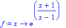
| > | solve(x=f(y),y); |
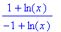
1(ii)(a)
| > | simplify(diff(exp(x)*ln(x),x)); |
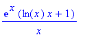
1(ii)(b)
| > | diff(cos(tan(x)),x); |
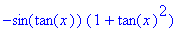
1(ii)(c)
| > | simplify(diff((3*x-2)/(x^2+x+4),x)); |
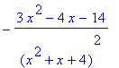
1(iii)
| > | diff(arcsec(x),x); |
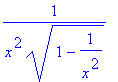
1(iv)(a) The rule 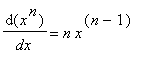 is only valid when 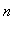 is independent of 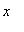
1(iv)(b)
| > | diff(x^x,x); |
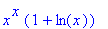
2(i)(a)
| > | Int(x*exp(2*x^2),x); |
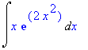
| > | Rule[change,u=2*x^2](%); |
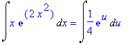
| > | Rule[constantmultiple](%); |
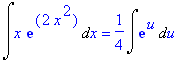
| > | Rule[exp](%); |
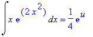
| > | Rule[revert](%); |
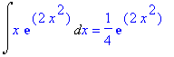
2(i)(b)
| > | int(sin(x)^3*cos(x)^7,x); |
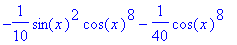
| > |
2(ii)
| > | J := Int(cot(x)*ln(sin(x)),x=Pi/4..Pi/2); |
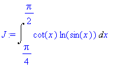
| > | Rule[change,u=sin(x)](J); |
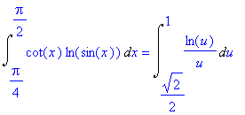
| > | Rule[change,v=ln(u)](%); |
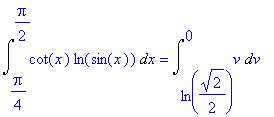
| > | Rule[power](%); |
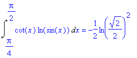
| > | simplify(%); |
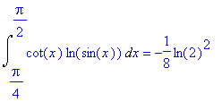
2(iii)(a) Omitted.
2(iii)(b)
| > | int(x^2*sin(3*x),x); |
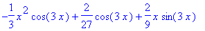
| > | int(x^2*sin(3*x),x=0..Pi/2); |
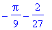
3(i)
| > | rref(matrix([[1,3,-2,10],[2,0,3,8],[3,-3,8,6]])); |
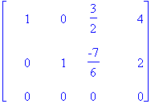
| > | solve({x + 3*y - 2*z = 10, 2*x + 3*z = 8, 3*x - 3*y + 8*z = 6}, {x,y,z}); |
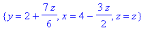
3(ii)
| > | A := matrix([[0,1,x],[0,0,1],[0,0,0]]); |
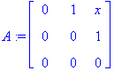
| > | B := matrix([[0,0,0],[1,0,0],[x,1,0]]); |
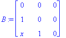
| > | evalm(A &* B); |
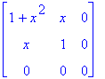
| > | evalm(B &* A); |
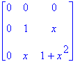
| > | evalm(A &* B - B &* A); |
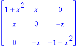
3(iii)
| > | A := matrix([[0,2,1],[1,3,4],[1,1,0]]); |
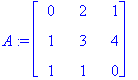
| > | cofactors := matrix( |
| > | [seq([seq(det(minor(A,i,j)),j=1..3)],i=1..3)]); |
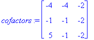
| > | signedcofactors := matrix( |
| > | [seq([seq((-1)^(i+j)*det(minor(A,i,j)),j=1..3)],i=1..3)]); |
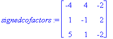
| > | adjugate := transpose(signedcofactors); |
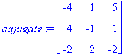
| > | det(A); |
| > | inverse(A); |
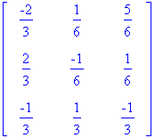
4(i)(a)
| > | convert((6*x^3-3*x^2-7)/(x^4-1),parfrac,x); |
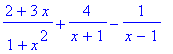
4(i)(b)
| > | int((6*x^3-3*x^2-7)/(x^4-1),x); |
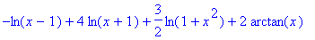
| > | int((6*x^3-3*x^2-7)/(x^4-1),x=2..3); |
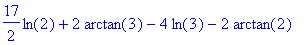
4(ii)(a)
| > | solve(abs(x-1) <= 3,x); |
(The answer means the closed interval [-2,4])
4(ii)(b)
| > | solve(x^3-x>0,x); |
(The answer means the union of the intervals (-1,0) and (1,infinity))
4(ii)(c)
| > | plot(sin(x),x=-9..9); |
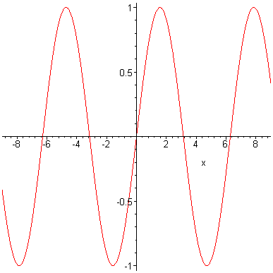
| > | solve({sin(x) >= 0, -9 <= x, x <= 9},x); |
| > |